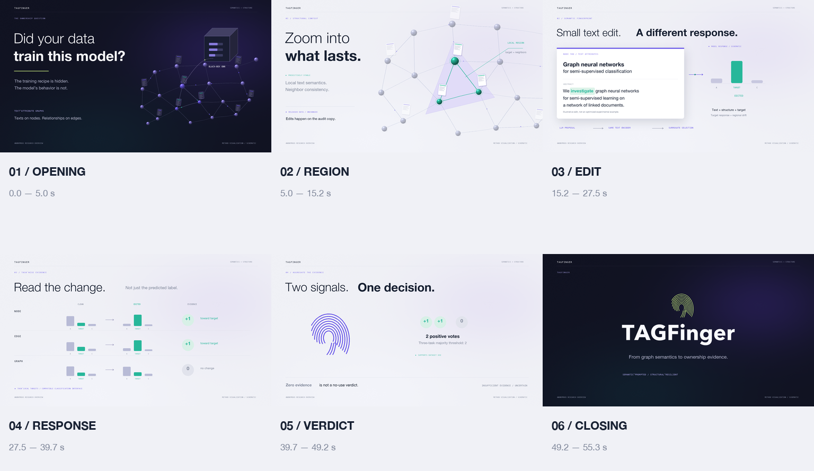

<!doctype html>
<html lang="zh-CN">
<meta charset="utf-8">
<meta name="viewport" content="width=device-width,initial-scale=1">
<title>TAGFinger · V3 动态样片</title>
<style>
*{box-sizing:border-box}body{margin:0;background:#111322;color:#f9faff;font:16px/1.75 system-ui,sans-serif}
main{max-width:1260px;margin:56px auto;padding:0 28px 60px}.label{color:#ccf481;letter-spacing:.14em;font-size:12px}
h1{font-weight:550;font-size:clamp(32px,4vw,54px);line-height:1.25;margin:15px 0}p{color:#a9afc8;max-width:900px}
video{display:block;width:100%;margin-top:30px;background:#181b30;border:1px solid #30354d;border-radius:12px;box-shadow:0 32px 100px #0005}
nav{display:flex;gap:12px;flex-wrap:wrap;margin:26px 0}a{color:#bcb4ff;text-decoration:none;border:1px solid #30354d;padding:9px 17px;border-radius:7px}
.note{margin:30px 0;border-left:3px solid #6856e8;padding:8px 20px;color:#a9afc8}img{width:100%;border-radius:10px;margin-top:20px}
</style>
<main>
<div class="label">TAGFINGER / V3 MOTION DIRECTION</div>
<h1>不是再换一套幻灯片。<br>让图、文本和响应真正动起来。</h1>
<p>55 秒核心方法与视觉方向样片：透视图结构、局部区域抬升、文档展开、文字替换、响应变化和证据汇聚。英文合成旁白与字幕。</p>
<video controls preload="metadata" poster="../../images/TAGFinger_v3_sample_poster.jpg">
<source src="../../images/TAGFinger_v3_sample.mp4" type="video/mp4">
</video>
<nav><a href="../../images/TAGFinger_v3_sample.mp4">直接打开样片</a><a href="../preview.html">对照上一版</a><a href="storyboard.json">旁白与源稿</a></nav>
<div class="note">本片用于确认动态视觉方向，尚不是完整投稿视频。原理例子均为示意，未展示虚构的实验指标。</div>

</main>
</html>
